Steel Tide: to review
Version 76, 11-19 10:41 AM. Version up: three new clips at the top: pilot walk/jog/sprint (closer, clean recording), pilot boarding the drop pod, and the full extract-to-space sequence. Live today also: fast travel teleports to stations and new station screens (M254), self-destruct with a hard lock flies to the target and a full-charge Laser Lancer fells trees (M253). Newest first. Total 38.9 MB.
Pilot walk, jog and sprint live M249
Updated 11-19 10:40 AM ET · captured from Viewer export, lane VIEWER-ROWS-1119 on Dock M255 (gait as live in M249)
What changed: Re-recorded closer (pilot about half the frame) with a clean recorder; the game ran a steady 60 fps, so the old stutter was the recording.
Where to look: 0-3 s walk at hangar speed, 3-6 s Shift sprint, 7-10 s match jog, 11-14 s sprint. Open ground: the Viewer cannot stage the hangar for this one.

Click the image for full screen, click again for full size.
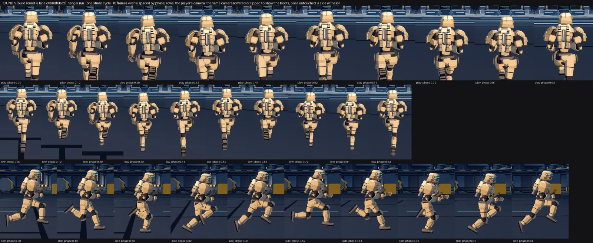
Click the image for full screen, click again for full size.
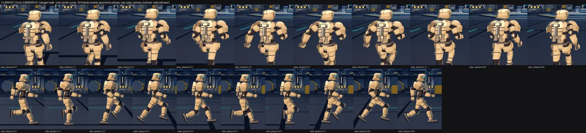
Click the image for full screen, click again for full size.
Pause the video at any moment to write a note for that second.
Pilot climbs into the drop pod live M247
Updated 11-19 10:40 AM ET · captured from Viewer export, Dock M255 (boarding as live in M247)
What changed: Now a clip: the real hangar, pilot climbs in, hatch closes, pod lowers, then the drop.
Where to look: About 2 s the pilot steps in; 2.5-3.5 s the hatch closes; 4-5 s the pod lowers; 5 s the drop view.

Click the image for full screen, click again for full size.
Pause the video at any moment to write a note for that second.
Extraction sequence, your notes applied live M244
Updated 11-19 10:40 AM ET · captured from Viewer export, Dock M255 (sequence as live in M244)
What changed: Now a clip of the full extract-to-space sequence as it plays today, with your notes applied.
Where to look: 0-6 s lift-off from the island, about 8 s the hyperspeed flyby, 12 s space, 15 s ring arrival, 19-30 s the dock bay.

Click the image for full screen, click again for full size.
Pause the video at any moment to write a note for that second.
Island extraction, full sequence (with seconds) replaced by M244; the clip shows the old sequence
Updated 11-19 1:30 AM ET · captured from live build M236 (230855f913), play camera, default settings
What changed: The whole extraction from the island in one clip, with a seconds counter top-left so you can give timestamps.
Where to look: 0-28 s the stand on the island; 28 s evac is here; 32 s boarding; 33-39 s craft on the beach and lift-off; 40-47 s climb through cloud to orbit; 48-55 s the Cradle; 56-70 s docking in the bay; 72 s on the results.
Pause the video at any moment to write a note for that second.
Hangar laser tag live M241
Updated 11-19 1:22 AM ET · captured from lane build c05f7f7328 (shipped as M241)
What changed: Two pilots can shoot each other in the hangar: hit flash, a power-down, a shield bubble after a hit, and first to 3 wins.
Where to look: Contact sheet: top left two pilots firing, then the orange hit, the red power-down, the blue bubble, the bubble from behind, and jet flight at the bottom right.

Click the image for full screen, click again for full size.
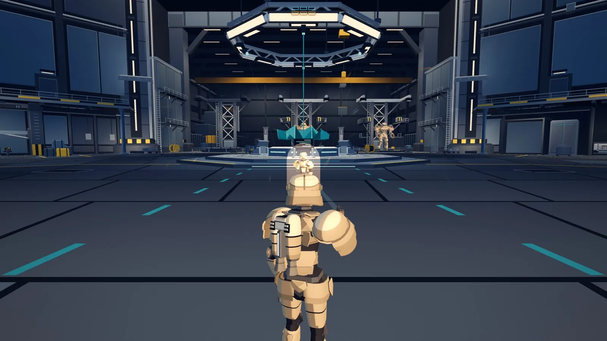
Click the image for full screen, click again for full size.
Mission Control: the holo globe table live M242
Updated 11-19 1:05 AM ET · captured from lane build a866ead855
What changed: The pile of teal shards over the table is now a rim-lit holo globe with a beam, on a dark table with a lit rim ring.
Where to look: Top image: before. Second: after, same spot and camera. Then the arrival view, before and after.

Click the image for full screen, click again for full size.

Click the image for full screen, click again for full size.

Click the image for full screen, click again for full size.

Click the image for full screen, click again for full size.
Drop pod marker in the hangar live M240
Updated 11-19 12:50 AM ET · captured from lane build 721d778954 (shipped as M240)
What changed: A "GO TO THE DROP POD" line with a distance and an on-screen marker now points you to the pods.
Where to look: First image: the marker over the pods with the distance (75 M). Second: the pod off screen.
The invisible wall that stops you walking out of the hangar is also live (M240), with no capture.

Click the image for full screen, click again for full size.

Click the image for full screen, click again for full size.
The real hangar, walked in the game live M229
Updated 11-18 9:30 PM ET · captured from lane build 38681087bb, before M229 (one harness check changed after)
What changed: The grey placeholder room is replaced by the real hangar model: the mech in its cradle, the drop pods, Mission Control, and the run now docks into it.
Where to look: First still: the view when you arrive. Second sheet: Mission Control, the Mech Bay console, a drop pod and the menu. Third sheet: the docked craft, the mech in its cradle, and the Cradle ship leaving.

Click the image for full screen, click again for full size.

Click the image for full screen, click again for full size.
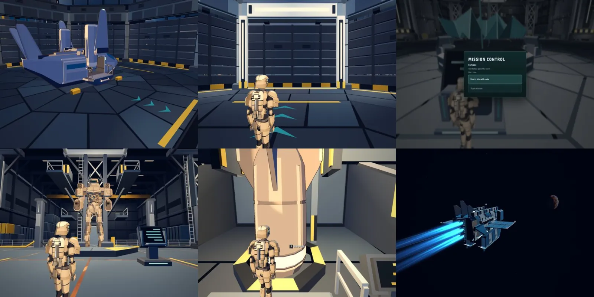
Click the image for full screen, click again for full size.
Gravity Well bends real shots on land live M231 (real shots; first pass M216)
Updated 11-18 9:01 PM ET · captured from lane build 9708d05de1, shipped as M231
What changed: The well now catches the real enemy shots near the mech and swirls them, instead of drawing stand-in shots.
Where to look: Centre left of the dome: the orange and green shots curling around the mech.
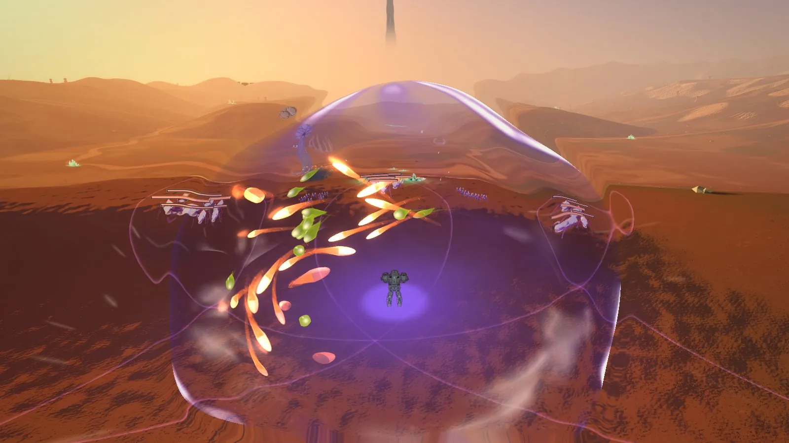
Click the image for full screen, click again for full size.
NEEDS YOUR PICK: the drop cannon's size on the Cradle (three sizes), with its back hidden and navy colour live M226; the Cradle is on by default since M233 (cannon pick still open)
Updated 11-18 7:43 PM ET · captured from lane build 7bb227aa5d
What changed: The cannon is now the ship's navy instead of bright white, its back is hidden in a gun bay like on the old ship, and the old ship no longer flashes at the start. Same cannon, same sequence.
Where to look: First three images: the cannon unfolded at three sizes, today's 1.4 times, then 2.5 times, then 3.5 times. In these previews the cannon stays the same size on screen and the SHIP is drawn smaller, so compare how big the cannon is against the hull above it. Then the full sheet: old ship on the left, Cradle on the right, for arrival, push, unfold, scope and launch.
Your pick: 1.4 is what ships today and everything clears. At 2.5 and 3.5 the cannon looks right for a ship this size, but its unfold swing hits the hull, so choosing either means one more round to make room for the swing. Weak points: the cannon's cyan coils and pale bands still stand out against the navy, and it does not take the hull's shadow.

Click the image for full screen, click again for full size.

Click the image for full screen, click again for full size.
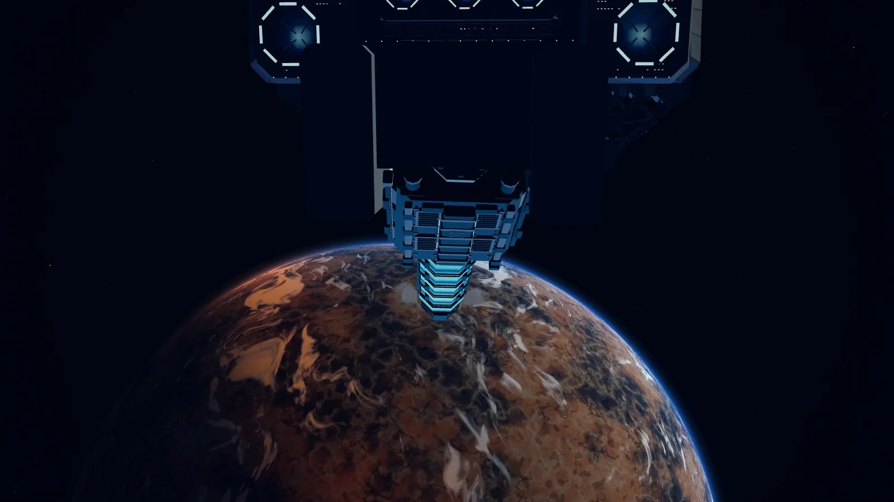
Click the image for full screen, click again for full size.
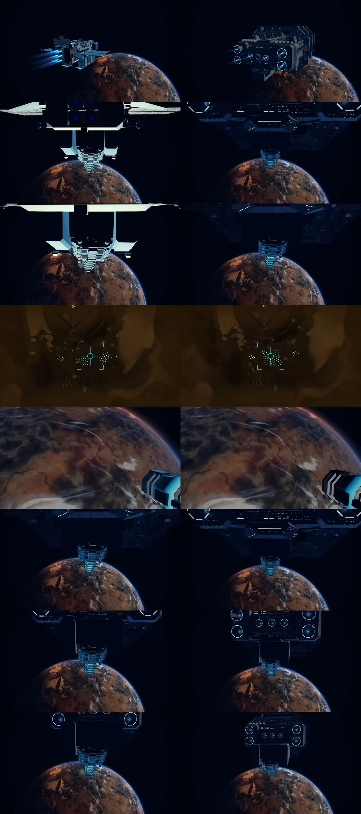
Click the image for full screen, click again for full size.
Stage 4, the new-planet loop: parts built, not playable yet not playable yet: 2 of 15 parts in the game (data only)
Updated 11-18 7:29 PM ET · captured from no capture
What changed: Only the planet recipe (rolls a random planet) and its terrain map are in the game, as data with nothing drawn. The loop to the next planet is built but not shipped; the planet look and its three sequences are not built.
Where to look: Nothing to look at or play yet. This item is here so you know where Stage 4 stands.
It is code only for now and runs behind its own switch, default off. The ship notes name no menu switch for the terrain, so you cannot reach it from the settings yet. The playable square is 3,640 units, not the 4,800 first briefed.
The whole run, second pass: real lift-off on the beach, real drop pod, new landing pad live M227; follow-up round live M229
Updated 11-18 7:05 PM ET · captured from lane build 5de357e75e
What changed: The lift-off now shows the whole Petrel on the island beach in the storm, lifting and kicking away. The drop pod is the game's real pod, not a teal square. The landing pad is the dark plated one with the cyan rim. The cloud beat keeps the craft in frame. Key hints no longer show over the docking.
Where to look: First image: nineteen frames in order, left to right, top to bottom. Row 2 is the new lift-off (Petrel on the beach, lifting, kicking away, in the clouds). Row 3: space, the Cradle, the hangar mouth, the dock. Rows 4 and 5: the hangar, with the real pod second from the end. Then the single lift-off frames.
These stills are the second pass. Since then the real hangar and the mech in its cradle came in with M229 (see the real hangar item) and the Cradle ship is on by default (M233). The slow first two seconds over the water were not re-captured.

Click the image for full screen, click again for full size.

Click the image for full screen, click again for full size.

Click the image for full screen, click again for full size.

Click the image for full screen, click again for full size.
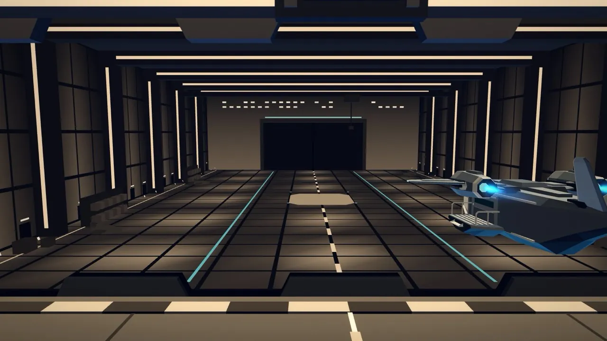
Click the image for full screen, click again for full size.

Click the image for full screen, click again for full size.

Click the image for full screen, click again for full size.

Click the image for full screen, click again for full size.
NEEDS YOUR EYE: Ocean Titan now uses the Strider's camera (low, behind, horizon in view) live M225
Updated 11-18 6:46 PM ET · captured from lane build 3fb30ed836
What changed: The Ocean Titan now uses the very same camera as the Strider: low and close behind, the horizon in view, the same mouse wheel zoom that remembers your level. The steep top-down view is gone.
Where to look: First image: Ocean Titan on the left, Strider on the right, same camera. Then the Ocean Titan at rest, in a hard turn, and with right mouse held and locks up. Then the armor bar in the centre and in the corner, same moment, so you can see why the corner was chosen. Last two: zoomed in and zoomed out.
About the bar: you asked for the centre. With this low camera the stern sits at the bottom centre, so a centre bar crosses the boat at rest, at speed and in turns (see the centre still). It is in the bottom left, where it never touches the hull. Weak point: while locking, the ring's lower edge sits on the bridge turret a little more than on the Strider. The status box in these stills is removed by the other job.

Click the image for full screen, click again for full size.

Click the image for full screen, click again for full size.

Click the image for full screen, click again for full size.

Click the image for full screen, click again for full size.

Click the image for full screen, click again for full size.

Click the image for full screen, click again for full size.

Click the image for full screen, click again for full size.
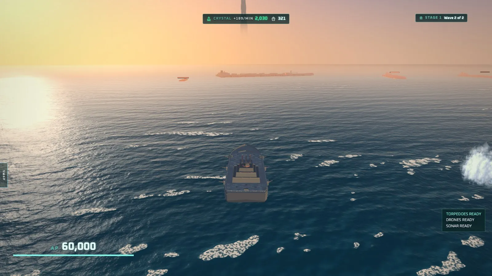
Click the image for full screen, click again for full size.
One lock ring, one Titan armor bar, cooldown icons instead of status text (first pass) live M231 (round 3 lock ring); Ocean Titan armor bar live M225
Updated 11-18 6:41 PM ET · captured from lane build 09529ca0a3
What changed: Every lock-on now uses the blue rotating ring with yellow triangle tags. Every Titan has the same armor bar in the bottom left, including a new one on the Strider. The Ocean Titan's status box is gone, and READY text became cooldown icons.
Where to look: Each image is old on the left, new on the right. First: Ocean Titan locking (box gone, yellow triangles, bar in the corner). Second: Strider locking (blue ring, new armor bar, lock count gone). Then ARC-10, Breacher, mech missiles and laser drones.
These stills are the first pass. Round 3 of the lock ring passed review and is live as M231, and the Ocean Titan armor bar below the ship is live as M225. Round 3 has no capture on this page.

Click the image for full screen, click again for full size.

Click the image for full screen, click again for full size.

Click the image for full screen, click again for full size.

Click the image for full screen, click again for full size.

Click the image for full screen, click again for full size.

Click the image for full screen, click again for full size.
The Cradle mothership, round 4: cannon moved under the stern, darker landing pad live M226
Updated 11-18 5:15 PM ET · captured from lane build 6a1ed78494
What changed: The drop pod cannon now hangs in a gun gallery under the stern so its unfold and the launch cameras are clear of the hull. The landing pad is dark plating with a cyan rim instead of the pale tan shape. More lights on the frames, gate and bay.
Where to look: First image: your chosen sketch frames on the left, the model on the right (flank on top, hangar mouth below). Second image: all seven cameras. The far view and the view from below are still the weakest (the hull reads as one flat blue).
Blind scores out of 10, bar is 8: far 5, flank 7, mouth 6.5, gate 6.5, below 5, pad 5.5, inside looking out 6.5. Good enough to prop up the playable sequence; the detail pass comes after the sequence plays. One change to know: with the cannon under the stern, the pod no longer flies out through the hoops, it passes under the stern.

Click the image for full screen, click again for full size.
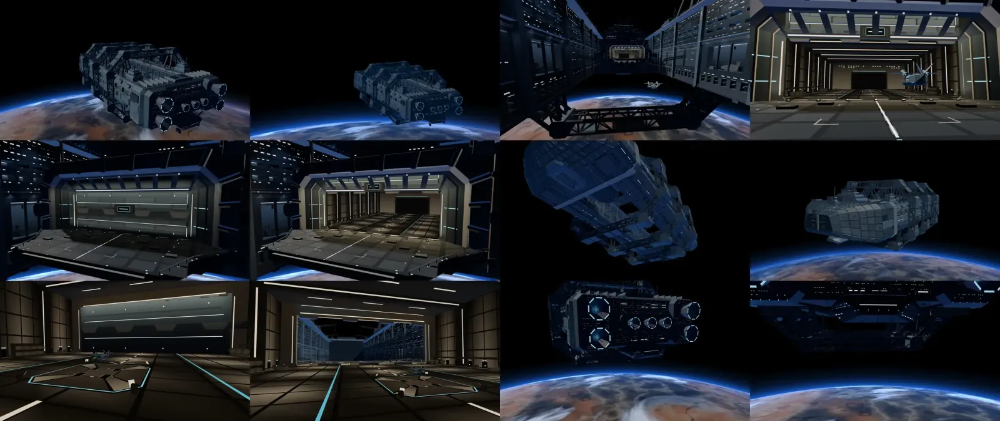
Click the image for full screen, click again for full size.
Red fliers over the island: fewer, and they creep instead of parking live M202 (fewer, creeping); M218 added: they no longer attack from behind
Updated 11-18 12:30 AM ET · captured from lane build 673296defc (left: live game, right: fix)
What changed: At most 4 alive at once (was 12+); they drift slowly toward you instead of hanging still and then jumping. The dive attack is the same.
Where to look: Left vs right, whole clip: the fliers above the pilot.
Pause the video at any moment to write a note for that second.
Rocket sentry: the pilot sits in it, hands on the handle in review, not live (round 3)
Updated 11-17 1:45 PM ET · captured from lane build, on the Test Range
What changed: Round 3. The pilot now has a pose made for this seat: both hands on the handle bar, feet on the footplate, legs clear of the frame. The footplate was raised a little and the two frame bars spread slightly so they no longer cross his legs. If the sentry is destroyed under him he ends up standing on the ground.
Where to look: First still (enlarged): side view and front view; check the hands on the bar and that no bar crosses a leg. Clip: climb on, turn left, turn right, tilt up, fire, climb off, then your own view. Third still: your view while manned, live build on the left, new on the right.

Click the image for full screen, click again for full size.

Click the image for full screen, click again for full size.
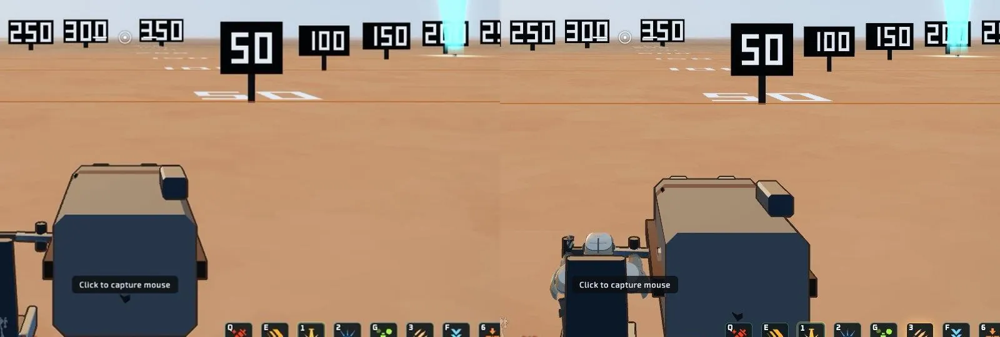
Click the image for full screen, click again for full size.
Pause the video at any moment to write a note for that second.
NEEDS YOUR CALL: island Horde, camera zooms in when you are on foot built, not live: waiting for your call on how close
Updated 11-17 1:30 PM ET · captured from lane build, island Horde, 1920x1080; top half = the live build, bottom half = the change, same script
What changed: On foot the camera now eases in from 110 to 40 (the mech view is unchanged). The pilot goes from about 7 pixels tall to about 20. That is still small: it stops there so you can see enemies 2 seconds before they reach you.
Where to look: Clip: top is before, bottom is after. At about 4 seconds the pilot leaves the mech and the bottom view eases in; at the end he re-enters and it eases back out. Still: the same on-foot moment, before on the left, after on the right; the pilot is the small figure right of the mech.

Click the image for full screen, click again for full size.
Pause the video at any moment to write a note for that second.
Test range: the mech's turn and stop, close up built, not live
Updated 11-17 12:25 AM ET · captured from range lane build on an older base, not the live game
What changed: First range clip with the mech filling the frame. Earlier range clips showed it small in the distance.
Where to look: Watch the legs and torso as it skates, turns and stops. The player HUD is drawn across the mech in this capture; that is a fault of the capture, not of the game.

Click the image for full screen, click again for full size.
Pause the video at any moment to write a note for that second.